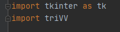

Zacetek
Najprej sem imel v ozadju odprt 4 urni video o pythona od katerega sem vsake toliko pogledal stvari, ki jih nisem znal.
Na zacetku sem naredil veliko spremenljivk, ki jih nisem skoraj nikoli uporabil. Potem sem naredil zanko, ki je delal dokler niso bile vse vrstice zapolnjene, ter funkcijo, ki je dovolila spreminjanje znakov iz konzole. Dodal sm tudi funkcijo log, da sem lazje iskal errore.
|

|
| Nato sem sel narediti funkcijo ai. Na zacetku so krogci zapolnjevali
prostor po dolocenem zaporedju, kasneje pa sem importal random in naredil, da je malo nakljucno.
|
Zatem sem naredil Funkcijo win, ki je na zacetku vracala samo True ali False, ki so lahko vstavli zanko, zmagovalca pa je funkcija izpisala sama.
Sedaj je igra delovala, a jo je bilo samo mogoce igrati v konzoli.
|
GUI
To sem si pustil za na konec, saj nisem vedel nic o delu z okni v pythonu.
V tem programu so tri okna. Na prvemu igras, eden se pokaze, da izves kdo je zmagal, s pomocjo tretjega pa dolocis kdo zacne igro.
|
|
Prvo sem prekopiral osnovno sestavo okna razdeljenega na 4 kvadrate in vse gumbe podvaojil ter spremnil njihove vrednosti od column in row, da je bila mreza okna 3x3. App.geometry sem povecal, da so bili vsi gumbi prikazani, potem sem pa vsem gumbom spremenil napis na nic, njihovo ozadje na belo in vsakemu dodal svojo funkcijo pod atributom command. Vsem gumbom sem dal ime button in potem dve stevilki, ki so bile njegova pozicija. Npr. button00 je prvi gumb. Tako sem takoj vedel, katero vrednost moram vpisat v seznam buttons, da spremenim atribute pravilnega gumba.
|
|
Zatem sem naredil funkcijo pressed, ki je delovala podobno kot na koncu, razen da naj bi na zacetku ta funkcija opravljala delo tudi od vseh funkcij od b1a do b3c ampak, se ne da dajati pogojev funkciji iz gumba,zato sem naredil za vsak gumb posebaj funkcijo, ki mu je spremenila napis, ter stanje na izklopljenega in pozvala funkcijo pressed ter ji dala pozicijo pritisnjenega gumba.
|
Zdruzevanje kode in zakljucki
Sedaj sem zbrisal polovico kode iz prve datoteke, saj ni bilo vec potrebno, da se da igrati v konzoli. Naredil sem, da so podatki igralne mreze enaki v obeh datotekah tako, da vsakic ko ena stran nekaj spremeni druga to izve s pomocjo funkcij. Dodal sem gumb za zacetek, ter dodal moznost, da racunalnik zacne, ter dodal okno, ki nastane ko nekdo zmaga in da obarva tri v vrsto. Da je bilo to mozno izvesti, sem funkciji win v prvi datoteki dodal se dve spremenljivki za vrnit in naredil, da s pogojem, ki ga sprejme na zacetku, vrne pravo vrednost.
|
|

|